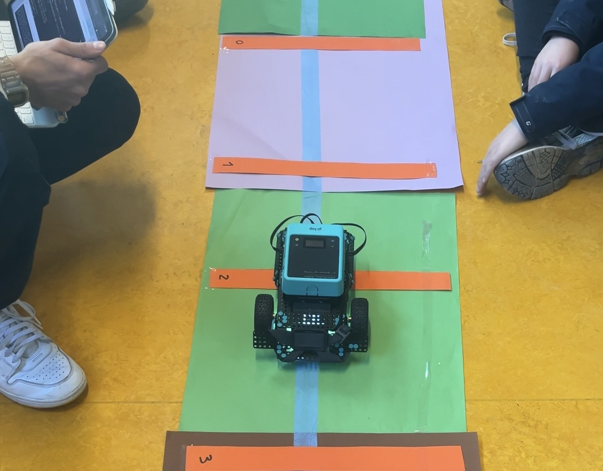
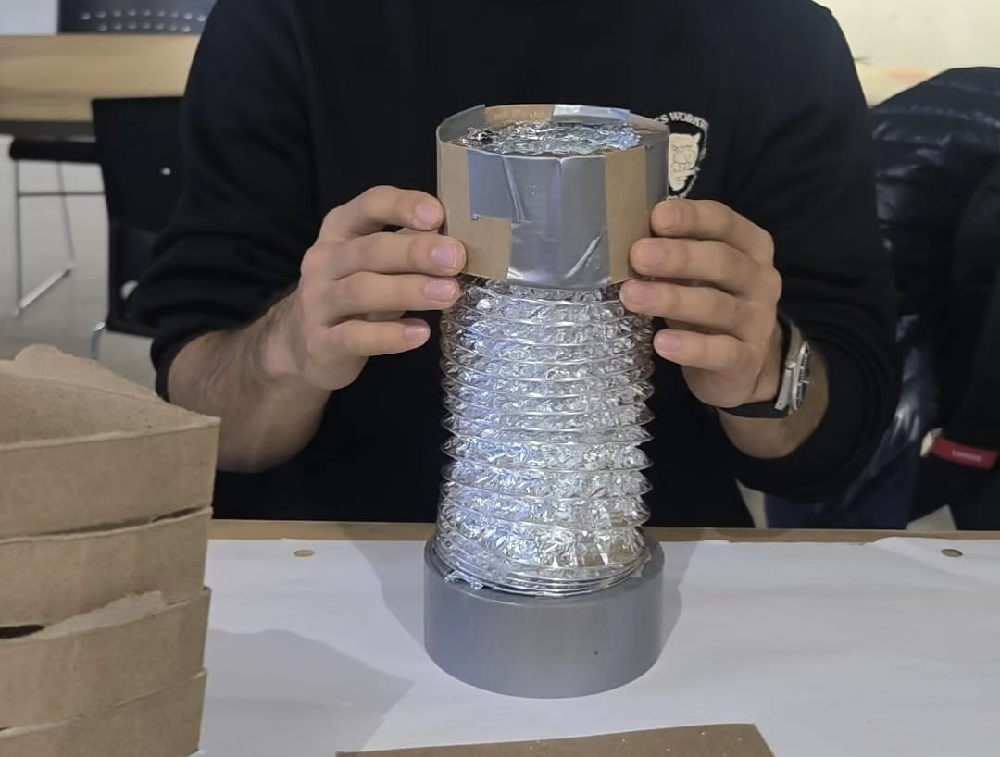
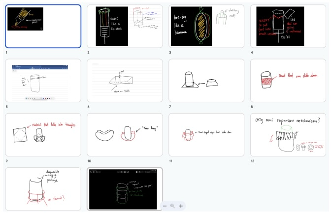
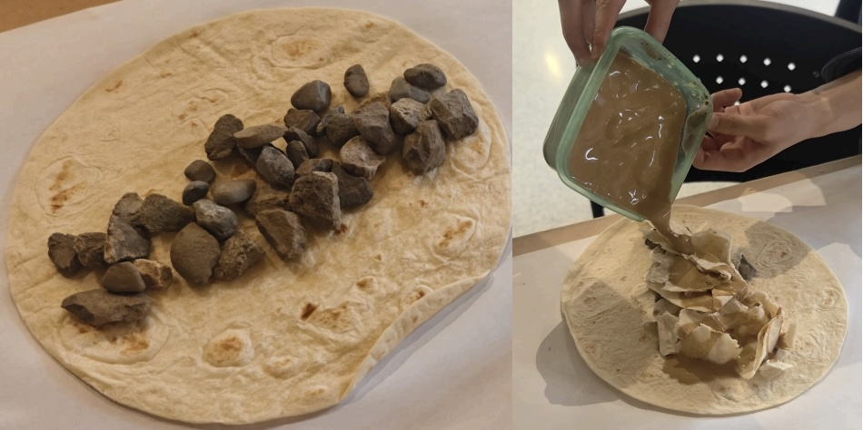
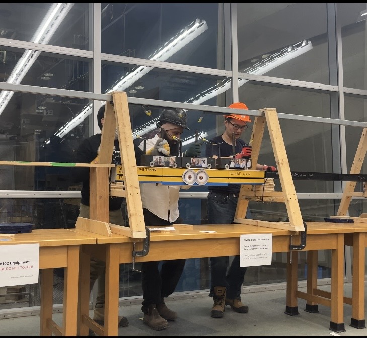
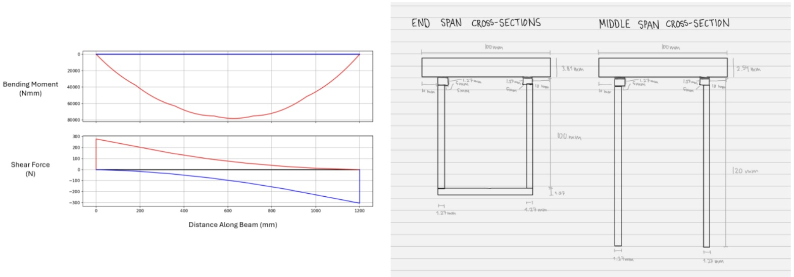
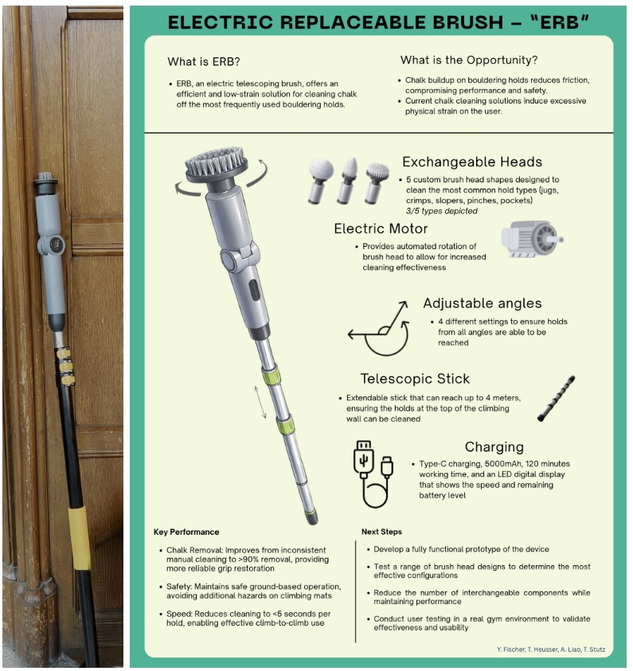
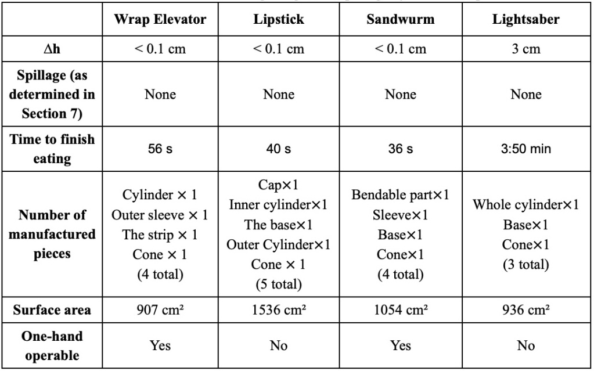
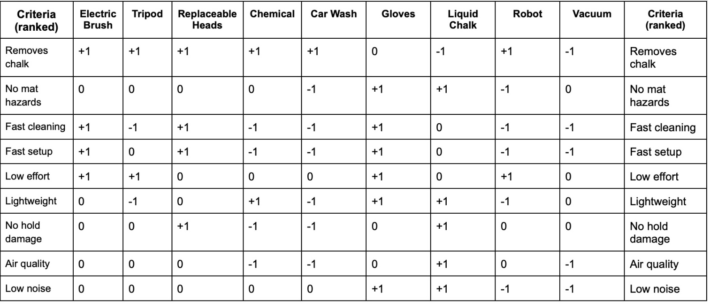

Student Engineer
Design Portfolio
Tristan Heusser
ESC102 · 2025–2026
My Approach to Engineering Design
I approach engineering design with the expectation that assumptions may fail, and I prioritize adaptability, observation, and hands-on iteration to respond effectively when they do.
My design process begins by observing user behaviour, physical systems, the natural world, and an effort to connect these observations across fields. This often produces unconventional ideas. I share them with my team, even when they seem impractical, because I believe the most valuable ideas are frequently the ones dismissed first. This positions me as a divergent contributor: someone who expands the solution space before convergence begins.
I rely heavily on prototyping and real-world testing to evaluate designs. This reflects one of my core beliefs: that analytical models are not complete representations of reality. The CIV102 bridge project demonstrated this directly — our structural analysis was rigorous and the mathematics aligned, but the bridge failed at its supports, a boundary condition our models did not adequately represent. This experience refined how I use analytical tools. I now treat analysis as a tool for narrowing the design space, not for finalizing a design.
At the same time, I aim to remain composed when systems fail. While running a robotics workshop for younger students, I encountered an issue: the robot could not distinguish between similar colours under classroom lighting. Rather than modifying the sensor, I modified the environment itself — replacing the floor surface with higher-contrast paper so the robot's existing colour sensor could function reliably.
This experience offered a valuable insight: constraints are often easier to reframe than to solve directly. The wise choice is not always to solve the problem in front of you — ask whether it is the right problem.
Ultimately, I design to improve people's day-to-day experiences, measuring success by how effectively a solution serves real users in real conditions.

High-contrast paper replacement that restored reliable colour detection without any hardware modification.
Context
Students frequently eat wraps while studying, leading to spillage and inconvenience in academic environments around U of T campus. Existing solutions are messy to open, do not allow multitasking, and leave residue at the bottom.
Objective
Design a wrap container that minimizes spillage while remaining practical and easy to use for students in study environments.
Team Contributions
Team of four Engineering Science students. Teammates contributed the lipstick-inspired sliding mechanism and the elevator-inspired design. I contributed the banana-sombrero concept and found alternate materials for proxy testing.
Outcome
Sandwurm prototypes demonstrated improved usability and reduced spillage. The cone mechanism allowed users to eat single-handedly without risk of spillage over notes or laptops.
Approach
- Used 6-3-5 brainwriting to generate a wide range of concepts across the team
- Developed the banana-sombrero concept, inspired by the natural mechanics of peeling a banana
- Tested prototypes by simulating wraps using rocks (solids) and oobleck (sauce) for rapid iteration without food waste
- Converged on the sandwurm design: a sliding sleeve the user pushes down over the wrap as they eat, with a cone-shaped attachment at the top to catch spillage

Sleeve in the raised position before eating begins. The user progressively lowers it while the cone attachment catches spillage from above.

Brainwriting output showing banana-sombrero, lipstick-sliding, and elevator concepts, each annotated to show the mechanical logic it contributed to the final sandwurm design.

Rock inside a burrito wrap and oobleck applied to simulate sauce spillage. Spillage was captured beneath the prototype and compared across designs by coverage area.
This project is where I first became aware of the importance of generating ideas without immediately evaluating them. The banana-sombrero concept emerged from observing how a banana peel separates from the fruit. The 6-3-5 brainwriting session made space for it, as well as for the lipstick and elevator concepts my teammates contributed.
A meaningful decision in this project was to use reusable materials for testing. Rather than accepting the assumption that real food was necessary for meaningful testing, I proposed using rocks to mimic solids and oobleck to mimic sauce, allowing rapid iteration across multiple trials with consistent materials and little waste.
The final sandwurm design was not any single person's idea. The sliding mechanism was inspired by a teammate's elevator concept; the cone attachment emerged from another team member; the geometry of the bottom was refined through iteration. This convergence worked because the team built on each other's contributions rather than selecting among them.
However, this project revealed a weakness I recognized during my second semester: I spent more time exploring ideas than documenting the reasoning behind convergence decisions. By Praxis II, I changed this approach — a pattern I return to in the Final Reflection.
Context
Design and construct a matboard bridge to maximize load capacity under standardized test conditions with fixed span and material constraints.
Objective
Optimize structural performance using analytical modelling and mathematical calculations, producing a bridge that maximizes load-to-weight ratio within material limits.
Team Contributions
Team of three Engineering Science students. Teammates found and adapted existing structural analysis code for shear and moment envelope calculations. I contributed to cross-section selection and led parts of the physical construction.
Outcome
The bridge withstood approximately 400N before failure due to sliding off its support platforms rather than structural collapse. The internal structure performed as designed. The connection to the supports did not.
Approach
- Each team member independently explored different cross-section geometries through parallel concept development
- Used shear and moment envelope calculations to identify critical load locations and guide cross-section selection
- Selected a hollow box cross-section for end spans and two vertical legs for the middle span, optimizing for moment and shear distributions
- Constructed and tested a physical prototype under progressive loading

The matboard bridge under progressive loading. The internal structure remained intact, confirming the failure mode was external to the analytical model.

Shear and moment envelope diagrams alongside annotated cross-section sketches for the end spans (hollow box) and middle span (two vertical legs).
Our structural analysis was thorough: envelope calculations drove every major cross-section decision, and the relationship between geometry and load resistance was well understood before we built anything.
The bridge did not fail internally; it slid off its supports. The problem was not that we used analytical tools incorrectly. It was that we treated the analysis as a complete model of the system when it was only a model of part of the system. The supports, the friction conditions at the resting platform, and the geometry of the bridge ends were treated as boundary conditions to be assumed rather than variables to be designed for.
Comparing this to Praxis I: in both projects, my preferred approach worked well within its domain and left gaps at the edges. I go deep into the well-defined part of the problem and underspecify the edges. The correction I now apply is a question asked explicitly at the end of any analytical phase: What have we not modelled, and what are the limitations of what we have?
Context
Climbing holds accumulate chalk and debris during use, reducing grip quality and user safety. Existing solutions require removing holds (not feasible between climbs), or use a fixed-head brush that does not account for variability in hold geometry.
Objective
Design a tool that allows holds to be cleaned efficiently between climbs, without disturbing the natural atmosphere of the climbing gym.
Team Contributions
Team of four Engineering Science students. Teammates proposed the electric motor concept, the wall-scaling robot concept, and a car-wash system. I proposed the exchangeable heads solution and their integration with a telescoping pole and electric motor.
Outcome
The final prototype cleaned over 90% of chalk, took under 10 seconds to set up, and had a decibel rating lower than the gym's ambient noise (~55 dB).
Approach
- Reframed the problem from "how do we clean climbing holds" to "how do we clean holds between climbs"
- Explored three parallel directions: a tripod-mounted device, an electric toothbrush design, and the exchangeable heads concept
- Converged on an integrated solution: an electric motor combined with a telescoping pole, with interchangeable cleaning heads for different hold geometries
- Built a high-fidelity prototype for the Praxis II Showcase

Full-length view of the assembled motor, telescoping pole, and cleaning head. The interchangeable heads are the primary custom-designed component.

Measurement matrix comparing wrap elevator, lipstick, sandwurm and lightsaber designs against criteria including single-handed use and spillage containment.

Pugh chart evaluating tripod, robot, vacuum concepts among others, with the electric brush and replaceable head solutions highlighted as top performers.
The most important decision in this project happened before we generated a single concept. Reframing the problem around preserving the natural flow of climbing allowed us to later eliminate concepts solving the wrong problem. The wall-scaling robot was creative; however, a robot that surprises climbers and throws them off their rhythm is not ideal.
The parallel concept exploration of the electric motor, tripod design, and exchangeable heads allowed each direction to be developed further before comparing them. By exploring the motor and exchangeable head designs in more detail, we realized they might pair well together, which we confirmed through Pugh charts and measurement matrices.
The high-fidelity Showcase prototype also taught me something about representation and feedback. A working, polished prototype gives people something concrete to react to. The questions I received about battery life and head replacement were more specific and useful than any internal team discussion I could have constructed.
Comparing this project to Praxis I: in Praxis I, I relied on intuition to navigate convergence and the decision record was weak. In Praxis II, every major choice was documented and defensible. That shift — from implicit to explicit reasoning — is the clearest evidence of growth I can point to across this portfolio.
Reframing involves redefining the design problem to better align with actual user needs, often by identifying and challenging assumptions embedded in the original problem statement.
Evidence of Use- Praxis II: Reframed from "cleaning climbing holds" to "cleaning holds between climbs," identifying the gap between scheduled maintenance and in-session need. Fig 7
- Praxis I: Reframed from "food containers" to "a container for students eating wraps while studying." Fig 2
- CIV102 (retrospective): We accepted "maximize load capacity" as the complete problem statement without asking whether there were failure modes outside the analytical scope. Fig 5
Reframing is essential in any engineering design task I now undertake. The CIV102 example highlights the cost of omitting it: had I asked "what are we assuming is not a problem?" during framing, the support condition might have emerged as a risk. I now use that question as a standard prompt during every framing phase.
Defining the design problem based on the specific needs, behaviours, and context of real users, rather than an abstract user population.
Evidence of Use- Praxis I: Focused on students eating wraps in study environments, shaping portability and mess-minimization requirements directly. Fig 3
- Praxis II: Focused on climbers between climbs, as a means of supporting the weekly deep-cleans the climbing gym already has in place. Fig 8b
Naming the user and context precisely makes requirements more specific and allows space to design a solution that addresses a real need. The risk in my workflow is over-specification: in Praxis II, I focused tightly on the between-climb climber and gave insufficient attention to gym staff, who would ultimately purchase and maintain the tool.
Explicitly listing the assumptions of an assignment: users, environment, and boundary conditions, and distinguishing them from verified constraints before design work begins.
Evidence of Use- CIV102: We assumed the supports were a fixed boundary condition rather than a design variable. This assumption was never listed or examined. The bridge slid off its supports at 400N. Fig 5
- Praxis I: Explicitly questioned the assumption that real food was required for testing, leading to the rock and oobleck substitute approach. Fig 4
In Praxis I, challenging an assumption informally produced a better testing process. In CIV102, not challenging the support assumption produced a failure that rigorous analysis could not have prevented. Going forward, I will produce an explicit assumptions list at the start of every project, revisit it at the transition from Framing to Divergence, and again before finalizing any design for testing.
Generating design concepts by drawing parallels from unrelated fields and applying the underlying mechanism to the problem at hand.
Evidence of Use- Praxis I: The banana-sombrero concept emerged from observing how a banana peel separates from the fruit, creating a clean grip interface. Fig 3
Analogical thinking is where my strongest ideas originate. The banana-sombrero was not the final design, but it shifted the team's thinking toward a peeling mechanism that influenced the sandwurm's sliding sleeve. The limitation is that analogies can mislead: a mechanism that works in one domain may not transfer cleanly into another. I have learned to test analogical concepts early rather than developing them fully before checking viability.
A structured ideation method where team members simultaneously generate ideas, pass sheets to the next person, and build on each other's concepts, producing many ideas quickly while ensuring equal participation.
Evidence of Use- Praxis I: Generated the banana-sombrero (mine), lipstick-sliding mechanism (teammates), and elevator-inspired design (teammates), all of which contributed to the final sandwurm concept. Fig 3
This method worked well because it allows for idea generation without criticism. I could introduce the banana-sombrero without immediate dismissal, and teammates could build on it without fully committing to it. Without a strong assessment phase afterward, time is wasted evaluating non-viable ideas. I would pair this with a convergence step before full evaluation in future projects.
Exploring multiple design directions simultaneously to ensure that one path is not explored too deeply at the expense of other possibilities.
Evidence of Use- CIV102: Each team member independently designed a different cross-section geometry before comparing analytical performance, leading to the hollow box and two-leg combination. Fig 6
- Praxis II: Simultaneously developed the tripod device, electric toothbrush design, and exchangeable heads before converging through structured comparison. Fig 8b
This approach consistently prevented anchoring on the first promising option. However, parallel exploration can create division in the team, with each member attached to their own concept. Pairing it with decision matrices ensures that convergence is driven by criteria rather than advocacy.
Designing and testing physical or functional models to evaluate performance, reveal hidden constraints, and refine designs through cycles of build-test-learn.
Evidence of Use- Praxis I: Tested wrap designs using rocks and oobleck, recorded spillage on 3D-printed and cardboard containers. Fig 4
- Praxis II: Built a high-fidelity functional prototype and tested different brush heads on climbing holds. Fig 7
- CIV102: The support-slip failure was only discoverable through physical testing; no analytical model predicted it. Fig 5
All three projects confirm the same principle: the real world reveals something the model did not predict. The key is managing resources and deciding on prototype fidelity appropriate to the goal. I am becoming more deliberate about choosing a prototyping approach that fits the question being asked, rather than defaulting to the most complete version possible.
Pugh Chart · Measurement Matrix · Pairwise Comparison
What it isStructured methods for comparing possible designs against defined criteria, and comparing the criteria against themselves, to reduce the influence of individual bias.
Evidence of Use- Praxis I: Used to evaluate the lipstick, elevator, and sandwurm designs against criteria including single-handed use, spillage containment, and ease of setup. Fig 8a
- Praxis II: Used pairwise comparison and a measurement matrix to evaluate the tripod, electric toothbrush, and exchangeable heads concepts against criteria including setup time and cleaning effectiveness. Fig 8b
In Praxis II, the telescopic pole solution was not the most creative concept, but the matrix made trade-offs visible and the outcome defensible. It is important to note that the tool is only as good as the set of requirements chosen; that judgment still has to come from the team.
Using mathematical models to determine worst-case internal forces across a system and optimize design parameters to perform reliably under those conditions.
Evidence of Use- CIV102: Used shear and moment envelope calculations to identify critical cross-section locations and guide selection of hollow box vs. two-leg geometries at different bridge spans. Fig 6
The bridge failure was not a failure of this tool; it was a failure of scoping. I applied it correctly within its domain and did not ask what it was failing to capture. Before finalizing any analysis, I now ask: what physical conditions exist at the edges of this model, and have we designed for them?
Creating sketches with annotations that communicate the intent of the design and the reasoning behind it — not just what the design looks like, but why it is designed that way.
Evidence of Use- Praxis I: Annotated sketches of the banana-sombrero and sandwurm concepts, explaining the mechanical rationale for each geometric feature. Fig 3
- CIV102: Cross-section sketches annotating the relationship between geometry and moment/shear resistance at each bridge location. Fig 6
If I cannot annotate a design feature clearly, it is often because I do not fully understand why it exists. Annotating also allows me to revisit past work with clarity. The limitation is audience: at Showcase, physical prototypes generated more useful interaction than sketches. Sketching is primarily a design thinking tool, best used in combination with a physical prototype during presentations.
Assembling a working design representation by combining existing, tested components rather than designing every subsystem from scratch.
Evidence of Use- Praxis II: Combined an electric motor from an at-home cleaning device with a telescoping window-cleaning pole to produce a working prototype with extended-reach, rotating-head functionality. The interchangeable heads were the primary custom-designed component. Fig 7
The value of this approach is that it produces something real that stakeholders can interact with. The Showcase prototype functioned, and judges asked specific questions about battery life and head replacement that no static representation would have generated. The trade-off is optimization: integrating existing subsystems introduces compatibility constraints.
A structured summary that communicates project context, process, and outcome to an unfamiliar audience, combining visual and written elements in a tight format.
Evidence of Use- Praxis II: Produced a one-pager for the Engineering Showcase summarizing the climbing hold cleaning tool for students, faculty, and industry visitors. Fig 7
Summarizing months of work in one page requires high levels of prioritization. The process revealed which aspects of the design were genuinely impressive and which were more simple. I plan to use the one-pager format in future projects as a mid-process communication tool, not only as a final deliverable, so that important ideas generated halfway through the design phase are not forgotten.
Development as a Designer
If I could go back to September and tell myself one thing, it would be this: the part of the problem you are most comfortable with is not the whole problem.
In Praxis I, I was comfortable generating ideas, so I generated a lot of them and spent less time thinking about how to evaluate them. The sandwurm was the right outcome, but I got there through common sense more than through rigour. At the time, I thought that was fine. Looking back, I realize rigorous testing would have added great value to the project and credibility as a whole.
In CIV102, I was comfortable with structural analysis, so I did it thoroughly and assumed that thoroughness was enough. The envelope calculations were correct. The bridge still failed. The part I was not comfortable with — namely the support interface, the friction conditions, the boundary — these were the parts that ended the design. I had treated the edge of my model as the edge of the problem.
By Praxis II, I had started to ask a different question at each stage: what am I not looking at? I used that question to reframe the problem before diverging, to evaluate concepts against explicit criteria instead of intuition, and to check what the decision matrix was not capturing before committing to a final design. The prototype we brought to Showcase was the strongest design I have been part of — not because the idea was the most creative, but because the process behind it was the most deliberate.
I do not think I have fully fixed my weaknesses. I still gravitate toward the parts of a problem I find I can handle better, and I still have to consciously pull my attention toward the edges. But I now know that is where the failures live, and I know to look there.
The robotics workshop taught me that the best solution is not always the one that solves the problem directly; sometimes it is the one that changes what the problem is. That is how I want to approach engineering design.